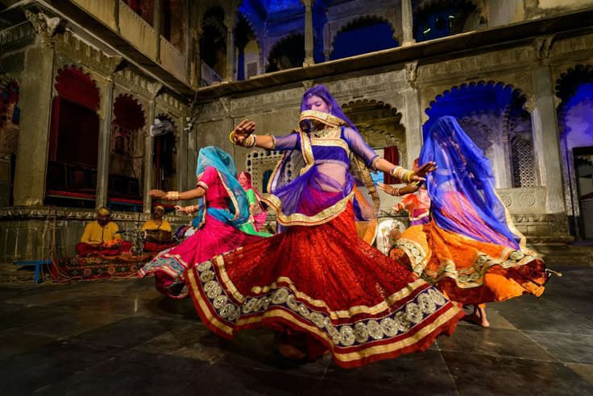

Exploring India's Culture and Heritage
Classical Dance Forms of India
The origins of Ghoomar can be traced back to the Rajput culture in Rajasthan, with the dance believed to have been performed as part of royal celebrations and rituals. Traditionally, it was performed by the women of the Rajput families, often in the courtyards of royal palaces, as a form of entertainment and social gathering. Over the centuries, Ghoomar has evolved and become a widely recognized dance form, with many communities across Rajasthan adopting it for festive occasions. It is said to have been introduced to the masses through the patronage of Rajput kings and their court dancers.
Ghoomar is a traditional folk dance that originates from the state of Rajasthan, India. This vibrant and graceful dance is performed by women, who wear colorful traditional attire such as ghagras (long skirts) and odhanis (veils). Ghoomar is renowned for its intricate spinning movements, where dancers twirl and rotate, creating a mesmerizing visual spectacle. It is commonly performed during festivals, weddings, and other celebratory events in Rajasthan, embodying the spirit of joy, unity, and cultural expression.
Ghoomar, a traditional folk dance from Rajasthan, has a rich history that dates back to ancient times. It is believed to have originated in the Rajputana region, where it was primarily performed by the women of Rajput families. The dance form is deeply intertwined with royal traditions and was initially performed in the courtyards of palaces during grand celebrations, royal gatherings, and festivities. Ghoomar was considered a symbol of elegance and grace, and it was often performed at events like weddings, festivals, and royal ceremonies.
pGhoomar is characterized by graceful spins and flowing movements, often accompanied by clapping, singing, and traditional music. The dancers form a circle, with each dancer performing synchronized spins while holding their colorful skirts in hand. The dance is usually accompanied by live music, including instruments like the dholak, harmonium, sarangi, and tabla. The dancers' spins are rhythmic and continuous, creating a sense of harmony and connection between the performers. The dance is typically performed in groups, and the collective energy of the dancers creates a vibrant atmosphere.:
Ghoomar holds a deep cultural and spiritual significance in Rajasthan. It is often associated with celebrations, particularly during the Teej festival, Gangaur, and wedding ceremonies. The dance not only showcases the grace and beauty of Rajasthani women but also reflects themes of feminine strength, unity, and community bonding. It is a dance of joy and celebration, symbolizing the connection between the people and the land of Rajasthan, and is often considered a way of expressing happiness and gratitude.